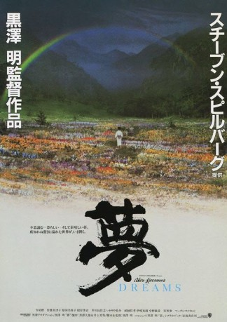

#7156 Akira Kurosawa's Träume
Alternativ: Dreams (Englischer Titel)
 
 IMDB-Wertung: 7.8 / 10
IMDB-Wertung: 7.8 / 10  Metascore: 0
Metascore: 0 
This is essentially eight separate short films, though with some overlaps in terms of characters and thematic material - chiefly that of man's relationship with his environment. 'Sunshine Through The Rain': a young boy is told not to go out on the day when both weather conditions occur, because that's when the foxes hold their wedding procession, which could have fatal consequences for those who witness it. 'The Peach Orchard': the same young boy encounters the spirits of the peach trees that have been cut down by heartless humans. 'The Blizzard': a team of mountaineers are saved from a blizzard by spiritual intervention. 'The Tunnel': a man encounters the ghosts of an army platoon, whose deaths he was responsible for. 'Crows': an art student encounters 'Vincent Van Gogh' and enters the world of his paintings. 'Mount Fuji in Red': nuclear meltdown threatens the devastation of Japan. 'The Weeping Demon': a portrait of a post-nuclear world populated by human mutations. 'Village of the ...
Jahr: 1990
Dauer: 114 Minuten
FSK: 12
Land: Japan Studio: Warner Bros.Tonspuren:
Untertitel:
Auflösung: SD (656x352) Größe: 1208 MB
Genre: Drama, Fantasy
Regisseur:  Akira Kurosawa, Ishirô Honda
Akira Kurosawa, Ishirô Honda
Drehbuch: Akira Kurosawa
Soundtrack:
Darsteller:
- Mieko Harada als The Snow Fairy
- Chishû Ryû als Old Man
 Martin Scorsese als Vincent Van Gogh
Martin Scorsese als Vincent Van Gogh- Catherine Cadou als
 Tetsu Watanabe als
Tetsu Watanabe als - Akira Terao als I
- Mitsuko Baishô als Mother of 'I'
 Toshie Negishi als Mother carrying child
Toshie Negishi als Mother carrying child- Mitsunori Isaki als 'I' as a boy
- Toshihiko Nakano als 'I' as a young child
- Yoshitaka Zushi als Pvt. Noguchi
- Hisashi Igawa als Nuclear Plant Worker
- Chôsuke Ikariya als The crying demon
- Masayuki Yui als Member of climbing team
- Tessho Yamashita als
- Misato Tate als
- Mieko Suzuki als 'I's sister
- Mugita Endo als
- Ryûjirô Oki als
- Masaru Sakurai als
- Masaaki Sasaki als
- Keiki Takenouchi als
- Motohiro Toriki als
- Shû Nakajima als Member of climbing team
- Tokuju Masuda als
- Masuo Amada als
- Sakae Kimura als Member of climbing team
- Shogo Tomomori als
- Ryo Nagasawa als
- Akisato Yamada als
- Ken Takemura als
- Tetsuya Itô als
- Shôichirô Sakata als
- Naoto Shigemizu als
- Hiroshi Miyasaka als
- Yasuhiro Kajimoto als
- Makoto Hasegawa als
- Nagamitsu Satake als
- Satoshi Hara als
- Yasushige Turuoka als
- Shigeru Edaki als
- Hideharu Takeda als
- Katsumi Naito als
- Masaaki Enomoto als
- Norio Takei als
- Eiji Iida als
- Koji Kanda als
- Hideto Aota als
- Kazue Nakanishi als
- Rika Miyasawa als
Datei: X:\HD-Eastern-Modern(A-M)\Akira Kurosawa's Träume (1990, FSK12, 656x352).mkv seit 02.10.2017
Festplatte: HD Eastern+Western
 Es gibt insgesamt 104 Filme in der Gruppe 'HD-Eastern-Modern(A-M)'
Es gibt insgesamt 104 Filme in der Gruppe 'HD-Eastern-Modern(A-M)'